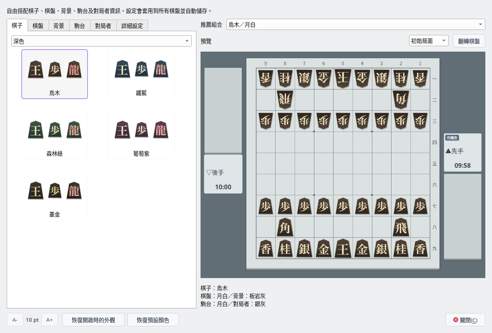
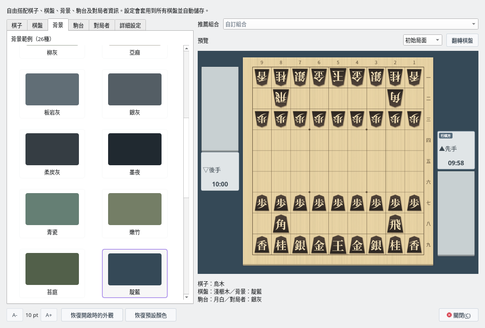
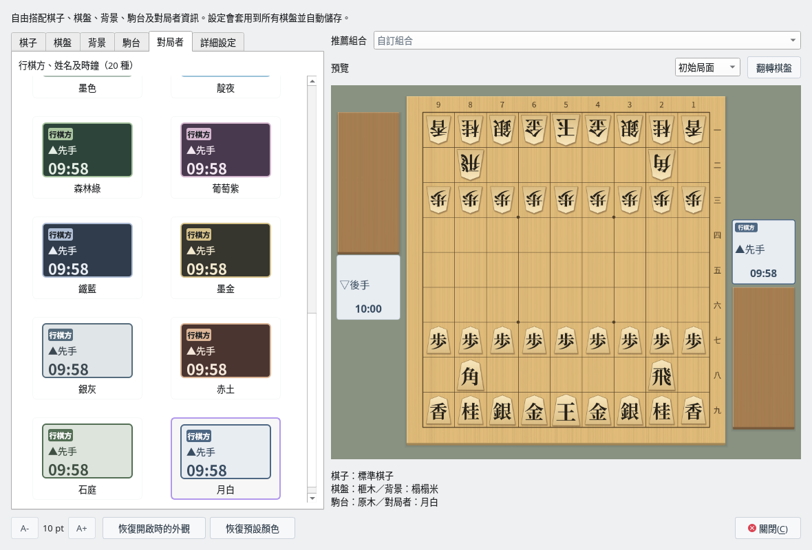
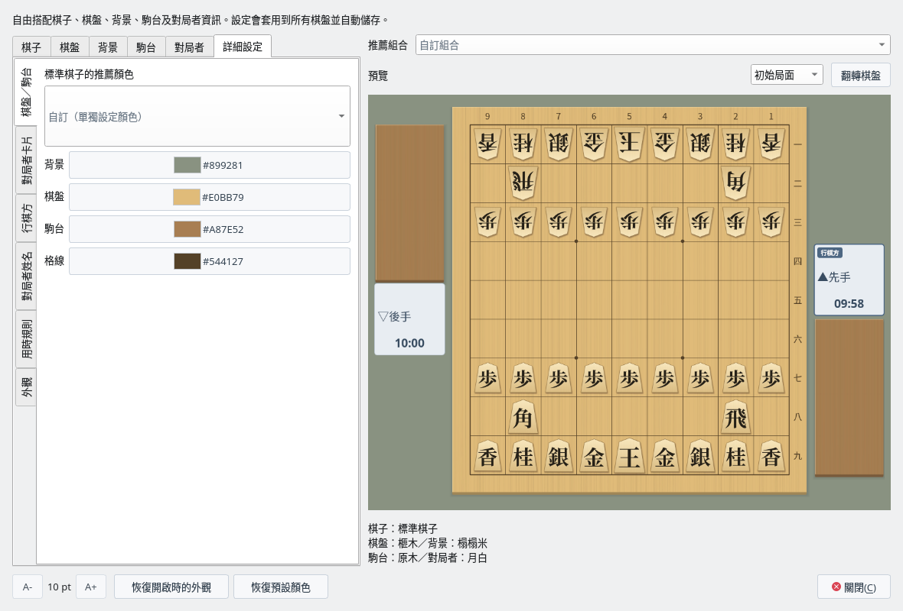

對局外觀
從樣本中自由組合 5 個部件
截圖於 Linux 上以繁體中文介面擷取。
開啟外觀視窗
選擇「檢視」→「對局外觀…」。以前的「棋子樣式」「棋盤配色」選單已合併到這個視窗。
在左側選擇樣本，在右側的預覽中確認整體組合效果。所選內容會立即套用到所有棋盤並自動儲存。預覽下方顯示目前所選 5 個部件的名稱。


推薦組合「烏木／月白」（棋子分頁依「深色」篩選）
分別選擇 5 個部件
| 分頁 | 樣本 | 改變的範圍 |
|---|---|---|
| 棋子 | 40 種 | 標準、虎紋、原木、淺色、深色、戰國漢字、西洋棋風格和字母棋子。可以依組篩選（棋子樣式）。 |
| 棋盤 | 26 種 | 棋盤的顏色、木紋和格線。 |
| 背景 | 26 種 | 棋盤和駒台周圍的背景色。 |
| 駒台 | 26 種 | 放置持駒的台的顏色和木紋。 |
| 對局者 | 20 種 | 卡片、「行棋方」標記、對局者姓名、用時及警告時的顏色。 |
在各分頁中選擇時，其他部件不會改變。更換棋盤時背景色保持不變，更換背景時棋盤的顏色、木紋和格線也保持不變。棋盤和駒台的木紋也可以分別設定。
| 部件 | 樣本 |
|---|---|
| 棋盤 | 榧木・淺榧木・金榧木・琥珀・胡桃木・深棕・淺桐木・亞麻・月白・銀灰・柔炭灰・墨夜・青瓷・嫩竹・苔庭・靛藍・淡櫻・藤灰・砂岩・藍灰 |
| 背景 | 榻榻米・淺綠・松綠・深棕・胡桃木・炭灰・柳灰・亞麻・板岩灰・銀灰・柔炭灰・墨夜・青瓷・嫩竹・苔庭・靛藍・淡櫻・藤灰・砂岩・藍灰 |
| 駒台 | 原木・淺榧木・金榧木・琥珀木・胡桃木・烏木・淺桐木・亞麻・月白・銀灰・柔炭灰・墨夜・青瓷・嫩竹・苔庭・靛藍・淡櫻・藤灰・砂岩・藍灰 |
棋盤、背景和駒台還各有 6 種與西洋棋風格棋子和字母棋子相配的樣本：「西洋棋・木色」「西洋棋・白色」「西洋棋・墨色」「字母・木色」「字母・白色」「字母・墨色」。


將棋盤改為「淺榧木」，背景改為「靛藍」
推薦組合與預覽
可以從「烏木／月白」「淺木／墨夜」「淺虎紋／淺榧木」以及西洋棋風格 9 套、字母 9 套等共 24 種組合開始。選擇推薦組合後，會同時改變包括背景在內的 5 個部件。之後也可以分別重新選擇各個部件（組合欄會顯示「自訂組合」）。
預覽與實際的對局畫面使用相同的繪製方式。可以用「成駒與持駒」和「翻轉棋盤」確認文字和持駒是否易讀。預覽的局面和翻轉操作不會影響正在進行的對局。
行棋方・對局者・用時的 20 種樣本
可從春綠・亞麻・瓷白・櫻霧・藤霧・青瓷・淺水藍・沙丘・琥珀・胡桃木・墨色・靛夜・森林綠・葡萄紫・鐵藍・墨金・銀灰・赤土・石庭・月白中選擇，淺色和深色的卡片都有。


對局者資訊的樣本（選擇月白）
詳細調整與設定的儲存
在「詳細設定」分頁中，可以逐項變更棋盤／駒台、對局者卡片、行棋方、對局者姓名、用時規則共 18 項顏色。背景和邊框顏色還可以設定透明度。在「外觀」中可以變更棋子大小（90～112%）、棋子陰影，以及棋盤和駒台各自的木紋。單獨變更顏色後會顯示「自訂（單獨設定顏色）」。
「恢復開啟時的外觀」會恢復開啟此視窗時的棋子、顏色和質感。「恢復預設顏色」只把 18 項顏色恢復為預設。
會儲存所選外觀、視窗大小、最後開啟的分頁和棋子篩選。主要變化顯示和詰棋的棋盤、匯出的棋盤圖片也會使用相同的設定。


「詳細設定」分頁的「棋盤／駒台」